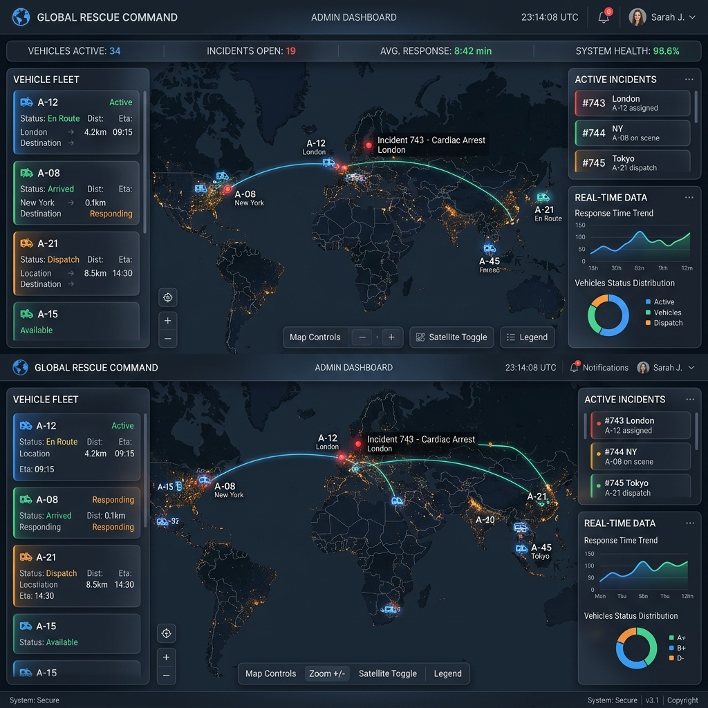
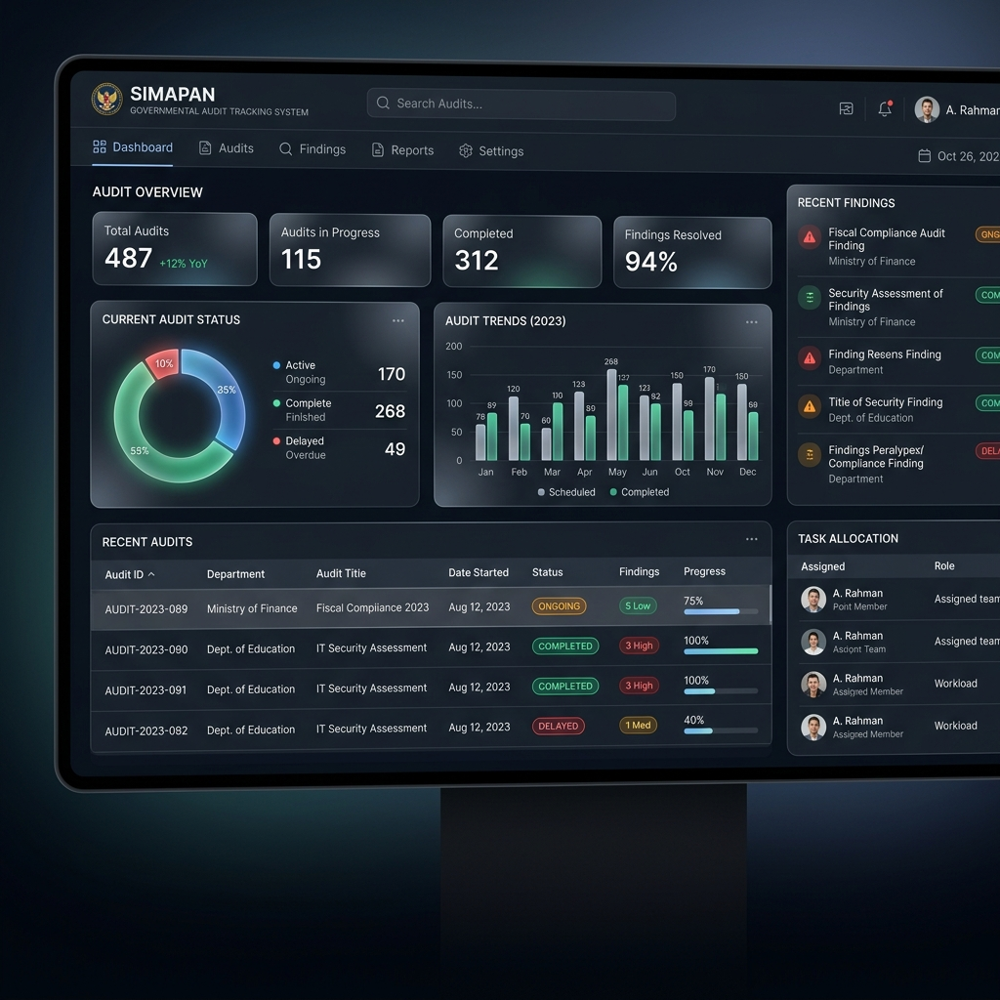
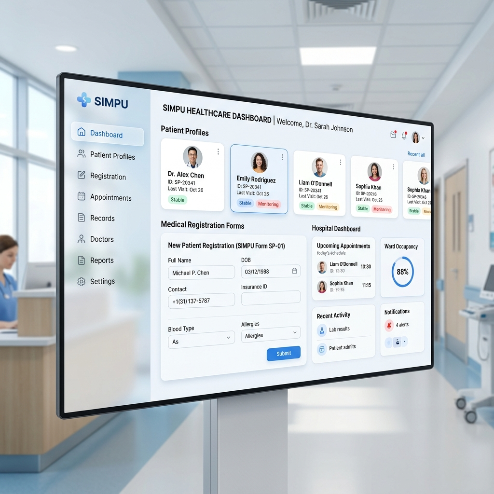
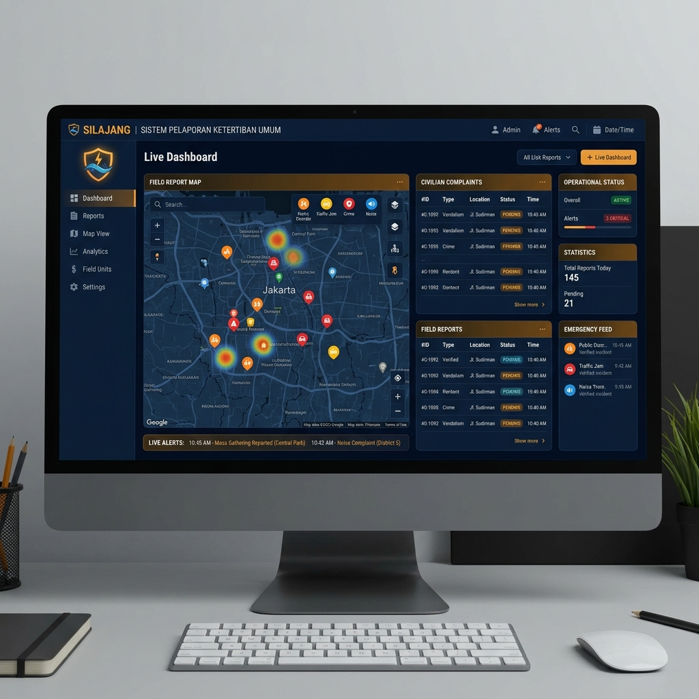

Kumpulan sistem strategis yang telah saya kembangkan dan analisis.

Sistem monitoring ambulans real-time dengan integrasi peta OSRM, manajemen ketersediaan bed rumah sakit, dan rujukan otomatis.

Aplikasi manajemen tindak lanjut hasil pemeriksaan (audit) untuk pemerintah kota, memfasilitasi monitoring progres perbaikan secara digital.

Sistem Informasi Manajemen Puskesmas terpadu untuk pendataan pasien, manajemen obat, dan pelaporan layanan kesehatan publik.

Platform pelaporan gangguan ketertiban umum oleh masyarakat yang terintegrasi dengan dashboard respon cepat personel Satpol PP.